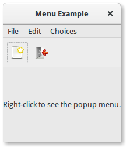

Menus¶
Nota
Gtk.UIManager, Gtk.Action e Gtk.ActionGroup foram descontinuados desde o GTK+ versão 3.10 e não devem ser usados em código recém-escrito. Use o framework Aplicação.
O GTK+ vem com dois tipos diferentes de menus Gtk.MenuBar e Gtk.Toolbar. Gtk.MenuBar é uma barra de menus padrão que contém uma ou mais instâncias Gtk.MenuItem ou uma de suas subclasses. Os widgets Gtk.Toolbar são usados para acessibilidade rápida às funções comumente usadas de um aplicativo. Exemplos incluem criar um novo documento, imprimir uma página ou desfazer uma operação. Ele contém uma ou mais instâncias de Gtk.ToolItem ou uma de suas subclasses.
Ações¶
Embora existam APIs específicas para criar menus e barras de ferramentas, você deve usar Gtk.UIManager e criar instâncias Gtk.Action. As ações são organizadas em grupos. A Gtk.ActionGroup é essencialmente um mapa de nomes para objetos Gtk.Action. Todas as ações que fazem sentido usar em um contexto particular devem estar em um único grupo. Vários grupos de ação podem ser usados para uma interface de usuário específica. Na verdade, espera-se que a maioria dos aplicativos não triviais faça uso de vários grupos. Por exemplo, em um aplicativo que pode editar vários documentos, um grupo mantém ações globais (por exemplo, sair, sobre, novo) e um grupo por documento que contém ações que atuam nesse documento (por exemplo, salvar, recortar/copiar/colar etc. ). Os menus de cada janela seriam construídos a partir de uma combinação de dois grupos de ação.
Existem classes diferentes representando diferentes tipos de ações:
Gtk.Action: Uma ação que pode ser acionada por um item de menu ou barra de ferramentasGtk.ToggleAction: Uma ação que pode ser alternada entre dois estadosGtk.RadioAction: Uma ação da qual apenas um em um grupo pode estar ativoGtk.RecentAction: Uma ação que representa uma lista de arquivos usados recentemente
Ações representam operações que o usuário pode executar, juntamente com algumas informações sobre como ele deve ser apresentado na interface, incluindo seu nome (não para exibição), seu rótulo (para exibição), um acelerador, se um rótulo também indica uma dica de ferramenta como o retorno que é chamado quando a ação é ativada.
Você pode criar ações chamando um dos construtores diretamente e adicionando-os a um Gtk.ActionGroup chamando Gtk.ActionGroup.add_action() ou Gtk.ActionGroup.add_action_with_accel(), ou chamando uma das funções de conveniência:
Gtk.ActionGroup.add_actions(),Gtk.ActionGroup.add_toggle_actions()Gtk.ActionGroup.add_radio_actions().
Observe que você deve especificar ações para submenus e itens de menu.
Gerenciador de IU¶
Gtk.UIManager fornece uma maneira fácil de criar menus e barras de ferramentas usando uma descrição XML-like.
Primeiro de tudo, você deve adicionar o Gtk.ActionGroup ao UI Manager com Gtk.UIManager.insert_action_group(). Neste ponto também é uma boa idéia dizer à janela pai para responder aos atalhos de teclado especificados, usando Gtk.UIManager.get_accel_group() e Gtk.Window.add_accel_group().
Em seguida, você pode definir o layout visível real dos menus e barras de ferramentas e adicionar o layout da interface do usuário. Essa “string ui” usa um formato XML, no qual você deve mencionar os nomes das ações que você já criou. Lembre-se de que esses nomes são apenas os identificadores que usamos ao criar as ações. Eles não são o texto que o usuário verá nos menus e nas barras de ferramentas. Fornecemos esses nomes legíveis quando criamos as ações.
Finalmente, você recupera o widget raiz com Gtk.UIManager.get_widget() e adiciona o widget a um container como Gtk.Box.
Exemplo¶
1 2 3 4 5 6 7 8 9 10 11 12 13 14 15 16 17 18 19 20 21 22 23 24 25 26 27 28 29 30 31 32 33 34 35 36 37 38 39 40 41 42 43 44 45 46 47 48 49 50 51 52 53 54 55 56 57 58 59 60 61 62 63 64 65 66 67 68 69 70 71 72 73 74 75 76 77 78 79 80 81 82 83 84 85 86 87 88 89 90 91 92 93 94 95 96 97 98 99 100 101 102 103 104 105 106 107 108 109 110 111 112 113 114 115 116 117 118 119 120 121 122 123 124 125 126 127 128 129 130 131 132 133 134 135 136 137 138 139 140 141 142 143 144 145 146 147 148 149 150 151 152 153 154 155 156 157 158 159 160 161 | import gi
gi.require_version('Gtk', '3.0')
from gi.repository import Gtk, Gdk
UI_INFO = """
<ui>
<menubar name='MenuBar'>
<menu action='FileMenu'>
<menu action='FileNew'>
<menuitem action='FileNewStandard' />
<menuitem action='FileNewFoo' />
<menuitem action='FileNewGoo' />
</menu>
<separator />
<menuitem action='FileQuit' />
</menu>
<menu action='EditMenu'>
<menuitem action='EditCopy' />
<menuitem action='EditPaste' />
<menuitem action='EditSomething' />
</menu>
<menu action='ChoicesMenu'>
<menuitem action='ChoiceOne'/>
<menuitem action='ChoiceTwo'/>
<separator />
<menuitem action='ChoiceThree'/>
</menu>
</menubar>
<toolbar name='ToolBar'>
<toolitem action='FileNewStandard' />
<toolitem action='FileQuit' />
</toolbar>
<popup name='PopupMenu'>
<menuitem action='EditCopy' />
<menuitem action='EditPaste' />
<menuitem action='EditSomething' />
</popup>
</ui>
"""
class MenuExampleWindow(Gtk.Window):
def __init__(self):
Gtk.Window.__init__(self, title="Menu Example")
self.set_default_size(200, 200)
action_group = Gtk.ActionGroup("my_actions")
self.add_file_menu_actions(action_group)
self.add_edit_menu_actions(action_group)
self.add_choices_menu_actions(action_group)
uimanager = self.create_ui_manager()
uimanager.insert_action_group(action_group)
menubar = uimanager.get_widget("/MenuBar")
box = Gtk.Box(orientation=Gtk.Orientation.VERTICAL)
box.pack_start(menubar, False, False, 0)
toolbar = uimanager.get_widget("/ToolBar")
box.pack_start(toolbar, False, False, 0)
eventbox = Gtk.EventBox()
eventbox.connect("button-press-event", self.on_button_press_event)
box.pack_start(eventbox, True, True, 0)
label = Gtk.Label("Right-click to see the popup menu.")
eventbox.add(label)
self.popup = uimanager.get_widget("/PopupMenu")
self.add(box)
def add_file_menu_actions(self, action_group):
action_filemenu = Gtk.Action("FileMenu", "File", None, None)
action_group.add_action(action_filemenu)
action_filenewmenu = Gtk.Action("FileNew", None, None, Gtk.STOCK_NEW)
action_group.add_action(action_filenewmenu)
action_new = Gtk.Action("FileNewStandard", "_New",
"Create a new file", Gtk.STOCK_NEW)
action_new.connect("activate", self.on_menu_file_new_generic)
action_group.add_action_with_accel(action_new, None)
action_group.add_actions([
("FileNewFoo", None, "New Foo", None, "Create new foo",
self.on_menu_file_new_generic),
("FileNewGoo", None, "_New Goo", None, "Create new goo",
self.on_menu_file_new_generic),
])
action_filequit = Gtk.Action("FileQuit", None, None, Gtk.STOCK_QUIT)
action_filequit.connect("activate", self.on_menu_file_quit)
action_group.add_action(action_filequit)
def add_edit_menu_actions(self, action_group):
action_group.add_actions([
("EditMenu", None, "Edit"),
("EditCopy", Gtk.STOCK_COPY, None, None, None,
self.on_menu_others),
("EditPaste", Gtk.STOCK_PASTE, None, None, None,
self.on_menu_others),
("EditSomething", None, "Something", "<control><alt>S", None,
self.on_menu_others)
])
def add_choices_menu_actions(self, action_group):
action_group.add_action(Gtk.Action("ChoicesMenu", "Choices", None,
None))
action_group.add_radio_actions([
("ChoiceOne", None, "One", None, None, 1),
("ChoiceTwo", None, "Two", None, None, 2)
], 1, self.on_menu_choices_changed)
three = Gtk.ToggleAction("ChoiceThree", "Three", None, None)
three.connect("toggled", self.on_menu_choices_toggled)
action_group.add_action(three)
def create_ui_manager(self):
uimanager = Gtk.UIManager()
# Throws exception if something went wrong
uimanager.add_ui_from_string(UI_INFO)
# Add the accelerator group to the toplevel window
accelgroup = uimanager.get_accel_group()
self.add_accel_group(accelgroup)
return uimanager
def on_menu_file_new_generic(self, widget):
print("A File|New menu item was selected.")
def on_menu_file_quit(self, widget):
Gtk.main_quit()
def on_menu_others(self, widget):
print("Menu item " + widget.get_name() + " was selected")
def on_menu_choices_changed(self, widget, current):
print(current.get_name() + " was selected.")
def on_menu_choices_toggled(self, widget):
if widget.get_active():
print(widget.get_name() + " activated")
else:
print(widget.get_name() + " deactivated")
def on_button_press_event(self, widget, event):
# Check if right mouse button was preseed
if event.type == Gdk.EventType.BUTTON_PRESS and event.button == 3:
self.popup.popup(None, None, None, None, event.button, event.time)
return True # event has been handled
window = MenuExampleWindow()
window.connect("destroy", Gtk.main_quit)
window.show_all()
Gtk.main()
|